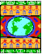

| World Open Space on Open Space 2008 |
|
| The Invitation | |
 |
To Register |
| The Site | |
| Getting There | |
| Who's Coming? | |
 |
Our Sponsors |
 |
Schedule and Times for Events |
 |
Accommodation— recommendations and links (delegates are responsible for their own accommodation) |
| Airports and Ground Transportation | |
| Opportunities to help share resources with others so they, too, can join us at the WOSonOS | |
 |
Information and suggestions about financial aid, home stays, and other resources |
 |
Visa information |
|  | Global Village Marketplace and Silent Auction |
 |
Maps and driving directions for the Golden Gate Club at the Presidio, Fort Mason, and San Francisco |
 |
Other Places and Things to Do in and around San Francisco (including whale watching, a WOSonOS tradition in regions shared with whales) |
| Currency Conversion | |
 |
Weather (summer in San Francisco shifts from warm to foggy and cold) |
| About Open Space Technology | |
| If you have any questions we welcome you to contact us: WOSonOS 2008 Host Team lisaheft@openingspace.net |
|
Accommodation
Delegates are responsible for their own accommodation.
Fort Mason is the site of our evening events and the Open Space Learning Workshop; Golden Gate Club at the Presidio is the site of the WOSonOS daytime sessions.
Below are some of the hotels we have visited in-person. They are listed by proximity to Fort Mason. There are others but if it does not have the name of a large, known chain, it may be best to select from this list because there are varying degrees of quality. If you search, search for accommodation in the Marina District or in Fisherman's Wharf.
Note: all amounts are $USD and tax is not included in these rate estimates.
Tax for hotels in San Francisco is 14%—so if the room is $79 US without tax, it is $90.06 with tax; if it is $100 it is $127 with tax; if it is $150 it is $171 with tax.
(Note that other local costs include tipping taxis or shuttles 15–20%, tipping for dining 15–20%, and paying people who carry your luggage $1–$2 per bag).
Remember that you can share a room and halve the price at all sites except the hostel.
Where possible, we have noted what MUNI bus line these hotels are near.
Plan your bus route at:
http://www.sfmta.com/cms/home/sfmta.php
MUNI busses are $1.50 USD one-way—ask for a transfer when you board—your next bus within a specific time is free with this transfer.
The #28 MUNI bus goes between Fort Mason and Presidio.
The #30 MUNI bus connects North Beach, Fisherman's Wharf and the Marina neighborhoods and meets the #28 bus.
The #47 and #49 MUNI busses run north and south on Van Ness Street and connect to the #30 bus.
Note: These sites contain graphics which may result in very slow downloading for some people
This hostel is just up a flight of steps and up the hill from Fort Mason:
AYH Fisherman's Wharf Golden Gate
Shared dormitories, linens provided, kitchen for your use, internet available
About $30 per night per person
Fort Mason Bldg 240
San Francisco, California 94123
+1 415 771-7277
Hosteling International—go to the San Francisco / Fisherman's Wharf page
http://www.hihostels.com/affiliates/hiusa60001.php?country=US&city=a60001&AffiliateID=97060
(if this link does not work you can go to http://www.hihostels.com/ and type "San Francisco Fisherman's Wharf" in the "Search" box). As you scroll down you can read about that hostel's amenities and prices you can also click on: "Click here to reserve a dorm bed or private room"
0.20 miles from Fort Mason, 2.05 miles from Presidio site
On or near Bus Route #30, which connects to the #28 bus
America's Best Inn
$129 for 2 double beds
2850 Van Ness Avenue (at Lombard Street)
San Francisco, California 94109
+1 415 776-3220
info@vannessinn.com
0.25 miles from Fort Mason, 2.05 miles from Presidio site
On or near Bus Route #30, which connects to the #28 bus
Comfort Inn
$169-$179 for 2 double beds
2775 Van Ness Avenue (at Lombard Street)
San Francisco, California 94109-1497
+1 415 928-5000
+1 877 424-6423 (toll free US / Canada)
http://www.comfortinn.com/ires/en-us/html/HotelInfo?hotel=CA004&promo=gglocal
0.27 miles from Fort Mason, 1.78 miles from Presidio site
On Bus Route #28
Marina Inn
about $65-70 US per night
3110 Octavia (at Lombard Street)
San Francisco, California, 94123
+1 415 928-1000
+1 800 274-1420 (toll free US / Canada)
0.38 miles from Fort Mason, 2.07 miles from Presidio site
On or near Bus Route #30, which connects to the #28 bus
Heritage Marina Hotel
$100 for 2 double beds
2550 Van Ness Avenue (at Filbert Street)
San Francisco, California 94109
+1 415 776-7500
+1 800 714-6835 (toll free US / Canada)
http://www.heritagemarinahotel.com
0.41 miles from Fort Mason, 2.32 miles from Presidio site
#10 MUNI bus to the # 28, which runs between Fort Mason and the Presidio
Argonaut
$269-$869 USD (tax not included) - $152 for those US attendees who qualify for a government rate; Pet-friendly
495 Jefferson Street (at Hyde Street)
San Francisco, California 94109
+1 415 563-0800
+1 866 415-0704 (toll free US / Canada)
http://www.argonauthotel.com/index.html
0.42 miles from Fort Mason, 1.60 miles from Presidio site
On Bus Route #28 which runs along Lombard Street between Fort Mason and Presidio
Motor Inn at Coventry
$101 for 2 double beds
1901 Lombard Street (at Buchanan Street)
San Francisco, California 94123
+1 415 567-1200
http://www.coventrymotorinn.com
0.48 miles from Fort Mason, 2.42 miles from Presidio site
On or near Bus Route #30, which connects to the #28 bus
Holiday Inn Fisherman's Wharf
$198 for 2 double beds
1300 Columbus Avenue
+1 415 771-9000
+1 800 972-3124 (toll free US / Canada)
http://www.holiday-inn.com/sfo-fishermans
0.51 miles from Fort Mason, 2.45 miles from Presidio site
On or near Bus Route #30, which connects to the #28 bus
Marriott San Francisco Fisherman's Wharf
$260/night for 2 double beds
1250 Columbus Avenue
San Francisco, California 94133
+1 415 775-7555
+1 800 228-9290 (toll free US / Canada)
0.52 miles from Fort Mason, 1.52 miles from Presidio site
On Bus Route #22 to Fort Mason
Hotel del Sol
starting from $179 US per night for 2 beds
3100 Webster Street
San Francisco, California 94123
+1 415 921-5520
+1 877 433-5765 (toll free US / Canada)
0.53 miles from Fort Mason, 2.47 miles from Presidio site
On or near Bus Route #30, which connects to the #28 bus
Travelodge Fisherman's Wharf
(they are renovating - as of February it will be called the Bayside Wharf)
$149-$159 for 2 double beds
1201 Columbus Avenue
San Francisco, California 94133
+1 415 776-7070
http://www.hotelclub.net/hotel.reservations/Travelodge_Fishermans_Wharf_North__San_Francisco.htm
0.55 miles from Fort Mason, 2.49 miles from Presidio site
On or near Bus Route #30, which connects to the #28 bus
Hilton San Francisco Fisherman's Wharf
$220-$270 for 2 double beds
2620 Jones Street
San Francisco, California 94133
+1 415 885-4700
http://www.hiltonfishermanswharf.com
0.58 miles from Fort Mason, 1.42 miles from Presidio site
On Bus Route #28 which runs along Lombard Street between Fort Mason and Presidio
Chelsea Motor Inn
$101 for 2 double beds
2095 Lombard Street (at Fillmore Street)
San Francisco, California 94123
+1 415 563-5600
http://www.chelseamotorinn.com
0.61 miles from Fort Mason, 2.16 miles from Presidio site
Take the #47 or #49 down Van Ness to Bus Route #30, which connects to the #28 bus
Castle Inn
Rates were not published for summer at the time of this writing
1565 Broadway
San Francisco, California 94109
+1 415 441-1155
+1 800 822-7853
0.61 miles from Fort Mason, 2.13 miles from Presidio site
On or near Bus Route #30, which connects to the #28 bus
Broadway Manor Inn
$64-$94 for 2 double beds
2201 Van Ness Avenue (at Broadway - 7 blocks south of #30 bus line)
San Francisco, California 94109
+1 415 776-7900
+1 800 727-6239
http://www.staysf.com/broadwaymanor
0.66 miles from Fort Mason, 1.34 miles from Presidio site
On Bus Route #28 which runs along Lombard Street between Fort Mason and Presidio
Cow Hollow Suites
$135 for 2 double beds
2190 Lombard Street (at Steiner Street)
San Francisco, California 94123
+1 415 921-5800
http://www.cowhollowsuites.com
0.80 miles from Fort Mason, 1.19 miles from Presidio site
On Bus Route #28 which runs along Lombard Street between Fort Mason and Presidio
Days Inn
$108 for 2 double beds
2358 Lombard Street (at Scott Street)
San Francisco, California 94123
+1 415 922-2010
http://www.daysinn.com/DaysInn/control/Booking/property_info?propertyId=04533&brandInfo=DI
0.85 miles from Fort Mason, 1.16 miles from Presidio site
On Bus Route #28 which runs along Lombard Street between Fort Mason and Presidio
Edward II Bed and Breakfast
$89-$199 (lots of options, shared bath, private bath, etc.)
3155 Scott Street (at Lombard Street)
San Francisco, California 94123
+1 415 922-3000
+1 800 473-2846 (toll free US/Canada)
1.02 miles from Fort Mason, .97 miles from Presidio site
On Bus Route #28 which runs along Lombard Street between Fort Mason and Presidio
La Luna Inn
about $70 or $80 and up
2599 Lombard Street
San Francisco, California 94123
+1 415 346-4664
+1 866 900-0157 (toll free US/Canada)
1.26 miles from Fort Mason, 2.20 miles from Presidio site
#43 MUNI bus to #28, which runs between Fort Mason and the Presidio site
Red Victorian
$79 to $219 (some have 1 bed, some have 2 beds)
1665 Haight Street
San Francisco, California 94117
+1 415 864-1978
http://www.redvic.com/rooms.html
Wednesdays and Sundays host Sami Sunchild invites you to a breakfast Conversation Cafe
Other sites of interest for finding accommodations:
Mapquest—to locate hotels ranked by distance away from Fort Mason
Enter "Fort Mason Center, San Francisco, California 94123-1382" to get a map, then "Find nearby - Hotels"
Hotelres.com
Fort Mason is in the Marina District; Golden Gate Club is in the Presidio